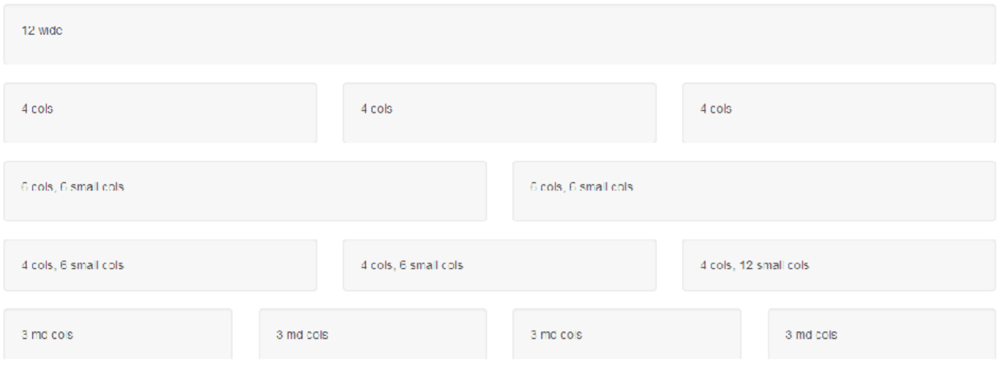

Framework
Framework er en samling af færdige og standardiserede kodeelementer, som anvendes til at opbygge et layout og funktionalitet på en meget struktureret og effektiv måde. De fleste hjemmesider har ofte en del fællestræk, som navigation og typografi, og med framework skal man ikke starte forfra hver gang. Der findes både front-end og back-end frameworks, og mange forskellige som bootstrap, foundation, boilerplat osv.
Hvis man kigger på indholdet er HTML typisk templates og snippets, CSS er en større fil der dækker alt og Javascript er en samling af funktioner som bliver benyttet af HTML snippets. Men alting har en pris, og når man bruger framworks er det større sider, det bliver hentet et større css og et større javascrip bibliotek – og så tager det lang tid at sætte sig ind i. Der er dog både fordele og ulemper ved frameworks. Fordelene er at man kan lave noget pænt hurtigt, det er let at få mange funktioner og at gøre siden brugervenlig. Ulemperne ved frameworks er at det unikke design, som man får når man håndkoder, er meget svært at opnå, man skal sætte sig meget ind i kode og funktionalitet, og så lærer man altså framworke og ikke ”sproget”.
Man kan både bruge lokalt eller hostet frameworks. Ved en lokal installation henter man filerne og integrer dem i siden, man har selv styr på adgangen, man har styr på versionerne, og det kan blive testet lokalt uden netværksforbindelser – man kan desuden også have tilpassede versioner. Ved den hostet løsning linker man til filer på en server på nettet, det kan f.eks. være ved CDN (Content distribution network), dette kan være en fordel på små servere, men der er desværre ingen garanti for at alle kan se koden og at man ikke bliver hacket – og så afgiver man kontrol over en stor del af siden.
Man kan også diskutere om koden skal være komprimeret. Funktionsmæssige er det magen til ikke komprimeret kode, men hvis man skal læse en andens kode, så er indryk og mellemrum mellem linjerne en god ide for overskuelighed. Den komprimerede kode er god hvis man gerne vil spare på tegn, her linker man bare til den komprimerede version, og hvis man så vil rette noget laver man f.eks. et nyt css dokument, og så er det altså det sidste man har linket til som er gældende (kaskade regler).
Bootstrap
På uddannelsen har vi brugt Bootstrap, som er et Framworks der er rigtig godt til responsive sider, og tilbyder et hav af forskellig funktioner og layouts. Bootstrap har 4 forskellige breakpoints, xs (telefoner), sm (tablets), md (computere) og lg (større computere). Sammen med disse 4 breakpoints, er det også ”nice to know” at Bootstrap bruger et grid med 12 kolonner, uanset enhedens størrelse.

Når man skal indsætte en række bruger man < div class=”row” >, og i row indsætter man hvor mange kolonner elementerne skal fylde i hhv. xs, sm, md og lg. Det er dog ikke nødvendigt at angive alle fire, de skalerer opad. Sætter man for xs og md gælder xs også for sm, og md gælder også for lg - dermed har man reelt to breakpoints . elementet angives med eks. < div class ="col-xs-12 col-md-6" > (på en meget lille skærm vil det her fylde det hele, og på en mellem skærm vil det her fylde det halve, hvor der kommer et element som skal fylde den anden halvdel)
Der er også et par grid regler, som er værd at huske på - Rækker skal være i en container (fixed-width) eller container-fluid (fuld bredde) for at fungere korrekt, indhold skal placeres i kolonner (col), kun kolonner må være direkte inde i rækker (row), angiv hvor mange grid-kolonner en given kolonne skal fylde for et givent breakpoint (col-xs-12 col-sm-8 col-md-6 col-lg-3) og hvis du vil udnytte siden, skal en række fylde 12 kolonner i et givet breakpoint